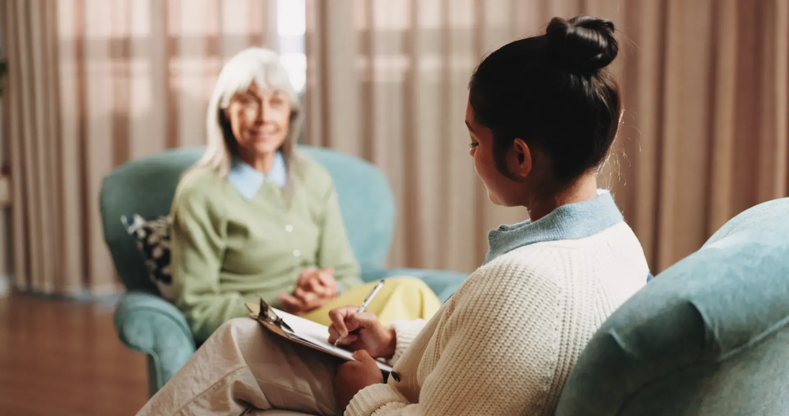
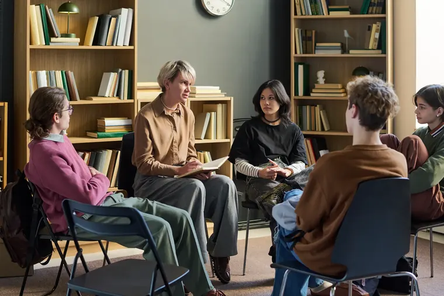
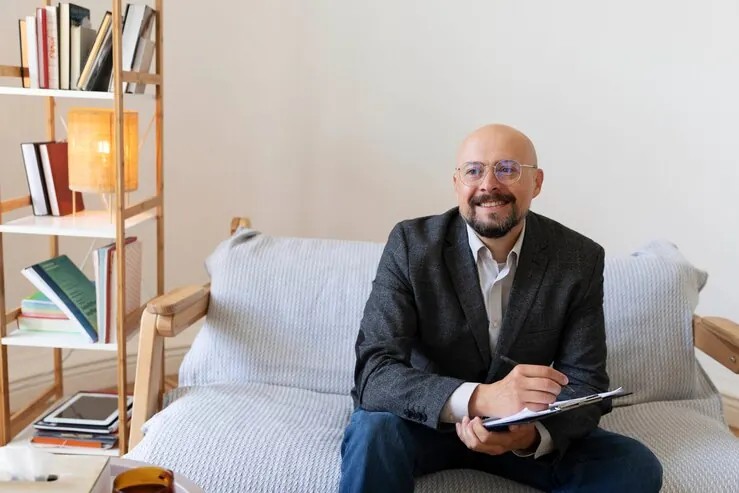
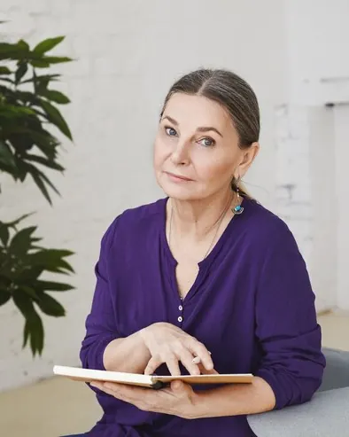
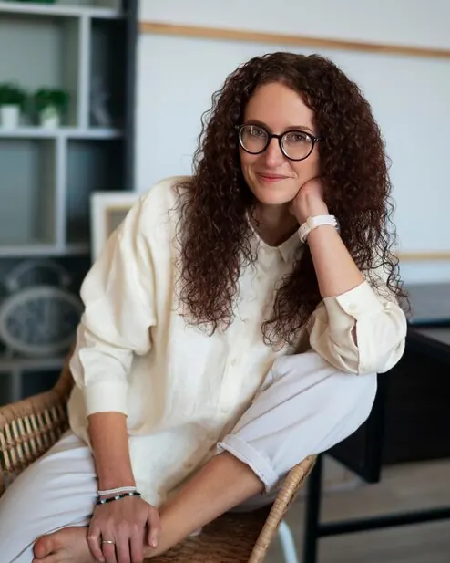

Ansiedade, luto, esgotamento no trabalho, autoestima, decisões difíceis. Você escolhe entre terapia cognitivo-comportamental, com tarefas entre sessões, ou psicanálise, com tempo para ir mais fundo.
- Semanal, 50 minutos
- Presencial ou online

Psicologia · Rio Vermelho, Salvador · presencial e online
Psicoterapia para adultos, adolescentes, casais e famílias. A primeira conversa serve para você conhecer a gente e decidir se quer continuar.
Como começa
A gente começa pelo que trouxe você até aqui: um sono que não vem, uma briga que se repete, um cansaço sem nome. Nas primeiras sessões, a psicóloga escuta mais do que fala. Depois, vocês combinam juntos o que vai ser trabalhado e com qual abordagem.
Marcar primeira conversaAtendimentos
Ansiedade, luto, esgotamento no trabalho, autoestima, decisões difíceis. Você escolhe entre terapia cognitivo-comportamental, com tarefas entre sessões, ou psicanálise, com tempo para ir mais fundo.

Escola, redes sociais, identidade, conflitos em casa. O adolescente tem um espaço só dele; os responsáveis recebem encontros de orientação a cada dois meses, sem quebrar o sigilo.

Para quando a conversa em casa virou discussão ou silêncio. O foco é o padrão que se repete entre vocês, não achar culpado.
Até oito pessoas, mesma psicóloga do início ao fim, doze encontros. Ouvir alguém dizer em voz alta o que você pensa sozinho ajuda mais do que parece.
Testes padronizados de atenção, memória e funções executivas, em 4 a 6 encontros, com laudo e uma sessão de devolutiva para explicar cada resultado.
A primeira conversa
Por onde começar
Sugestão para começar
Sessões semanais com técnicas para reconhecer e desarmar o ciclo da ansiedade, e tarefas curtas entre os encontros.
Frequência sugerida: semanal
Se você está pensando em se machucar ou não vê saída, não espere a consulta: ligue 188 (CVV), a qualquer hora, ou procure a UPA mais próxima.
Marcar primeira conversaSugestão inicial, não é diagnóstico. A decisão é sempre conversada na primeira sessão.
As primeiras semanas
Você fala, a psicóloga pergunta pouco e anota menos ainda.
Vocês nomeiam juntos o que está em jogo e onde dói mais.
Objetivos escritos, abordagem escolhida e frequência definida.
Uma sessão para olhar o caminho e ajustar o que não está funcionando.
Quando faz sentido, conversamos com o seu psiquiatra ou médico, sempre com a sua autorização.
Equipe

Atende adultos há 24 anos. Luto, envelhecimento e recomeços.
Ansiedade, pânico e casais que querem voltar a conversar.

Avaliação de TDAH e grupos de jovens às quartas-feiras.
Contato
Rua Almirante Barroso, 218 · Rio Vermelho, Salvador (BA)
Segunda a sexta, 8h às 21h · Sábado, 8h às 13h
(71) 3022-0721 · contato@clareirapsi.com.br
Marcar pelo WhatsAppEm crise? Ligue 188 (CVV), 24 horas, gratuito.